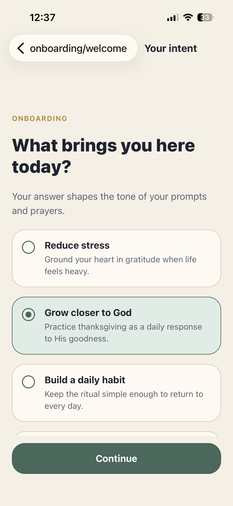
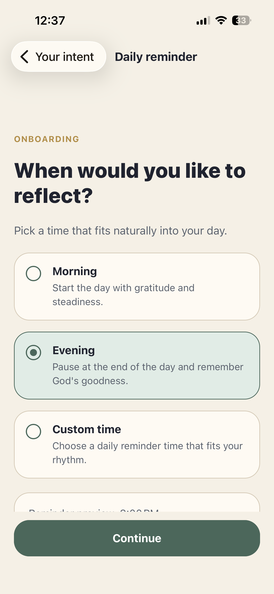

One scripture, one gratitude prompt, one prayerful response.
Daily Christian gratitude ritual
Make thanksgiving a steady part of your day.
Gratune guides you through a quiet daily rhythm of scripture, gratitude, and prayer without accounts, social pressure, or cloud clutter.
No account required and no remote journal database to maintain.
Reminders, streaks, history, search, and favorites support a lasting habit.
What Gratune includes
Simple enough to return to every day.
The product stays focused on a single spiritual rhythm instead of expanding into a noisy wellness dashboard.
Scripture-led reflection
Each session starts with a verse and gives you space to pause before writing.
Guided gratitude prompt
Short prompts help you notice God’s faithfulness without overcomplicating the habit.
Optional closing prayer
Turn your reflection into prayer while keeping the experience calm and uncluttered.
Reminder rhythm
Choose morning, evening, or a custom time that fits naturally into your day.
Voice, photos, and sharing
Add voice notes, speech-to-text, or photos, then share reflection cards if you want.
History and search
Return to past mercies with calendar history, favorites, and searchable entries.
Product walkthrough
A quiet flow from onboarding to reflection history.
These screenshots show how Gratune moves from intention setting into the daily ritual and then back into your past entries.
 Welcome
Welcome

Set your intent
Choose a reminder Read scripture
Read scripture
 Review entry
Review entry